| 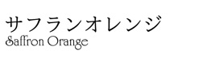 |
美容室のカラーリングに影響させずに、しなやかで美しい髪を守りたい』。
『ソジャット ヘナ サフランオレンジ』を使えば、ハリ・コシのある美しい髪に。 |
|
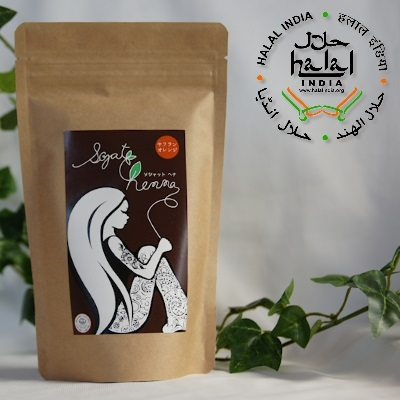
100g入：上代 2,600円（税込2,860円） |
『ソジャット ヘナ サフランオレンジ』は、
ソジャット産ヘナ100％。
黒髪は少し明るめに、白髪はオレンジ色に染まります。
本製品でヘアケアをすると毛髪にはり、こし、つやを与えクシ通りを良くしてくれます。また、継続使用で頭皮、毛髪を健やかに保ちます。
製品パッケージ内に同封しています『ヘナケアの方法』は、
こちらからPDFファイルを開くこともできます。 |
| 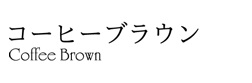 |
『ソジャットヘナコーヒーブラウン』を使えば、白髪の多い方にとって重要な「白髪を意識させない」
ための、そして「白髪染めを意識させない」ための自然な仕上がりのヘアケアを実現できます。 |
|
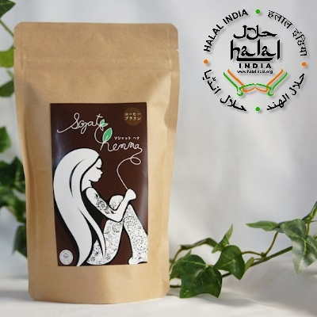
100g入：上代 3,600円（税込3,960円）
|
『ソジャット ヘナ コーヒーブラウン』は、ナンバンアイ葉（インディゴ）、ヘンナ（ヘナ＝ソジャット産ヘナ）、アセンヤクノキ、ダイズタンパクを配合しています。
アカネ根を含みません。
白髪を濃い茶系色に染めます。姉妹品『サフランオレンジ』でヘナケアをした後に、本製品を使い、二度染めをしていただくと、より美しく、しっかりと染まります。
本製品だけでヘナケアをされる方は、ヘッドマッサージをされる時にオイルは“使いません”。ナンバンアイ葉の色素はオイルが付着すると入りにくくなりますのでご注意ください。
製品パッケージ内に同封しています『ヘナケアの方法』は、
こちらからPDFファイルを開くこともできます。 |
| 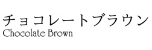 |
『ソジャット ヘナ チョコレートブラウン』は、白髪が多い方が、１度で明るい茶系に染める時に使う
製品です。手軽に、おしゃれな軽めの茶系色を実現します。 |
|
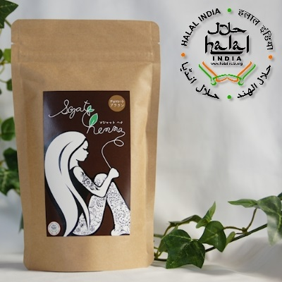
100g入：上代 3,300円（税込3,630円） |
『ソジャット ヘナ チョコレートブラウン』は、ヘンナ（ヘナ＝ソジャット産ヘナ）、ナンバンアイ葉（インディゴ）、ダイズタンパクを配合しています。
手軽に、一度染めで白髪を明るめの茶系色に染めます。姉妹品『コーヒーブラウン』よりも、明るい茶色になります。本製品を使ったケアのとき、事前のヘッドマッサージにはオイルは使いません。
3週間ごとにお使いいただくと、しっかりと濃くなっていきます。
製品パッケージ内に同封しています『ヘナケアの方法』は、
こちらからPDFファイルを開くこともできます。 |
| 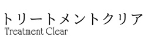 |
『ソジャット ヘナ トリートメントクリア』は、ご自身の髪の毛の色に影響を与えずに、ハーブの力で
トリートメント効果を得るためのブレンドです。 |
|
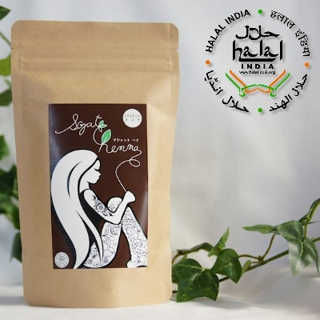
100g入：上代 2,400円（税込2,640円） |
『ソジャット ヘナ トリートメントクリア』は、
カシアアウリクラタ葉 、ツボクサ葉 、メリアアザジラクタ葉、アンマロク果実、サピンヅストリホリアツス果実 、アカシアコンシナ果実を配合しています。
全髪が白髪であったり、白髪の多い方が、トリートメントクリアを使ってトリートメントされた場合、白髪に色が残るケースを確認しました。その方の髪質、体温、など諸条件により、着色されるケースがあると判断しましたので、全髪白髪、多くの白髪の方は、色をつけずにケアしたいという場合には、トリートメントクリアは使用しないでください。
なお、部分白髪で多少の色残りは気になさらない方や、黒髪や茶系色の髪の方が、色の雰囲気を変えずにトリートメントしたいという場合には、どうぞ従来通り、お使いください。
製品パッケージ内に同封しています『ヘナケアの方法』は、
こちらからPDFファイルを開くこともできます。 |
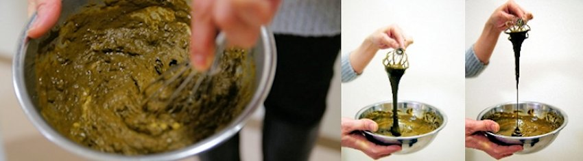
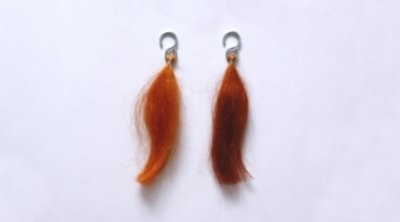
ソジャット ヘナ サフランオレンジの染色テスト例。
左が20分染。右が60分染。試材：白の馬毛。湯せんで、約40℃の環境を維持して実験。
※デジタルカメラの特性上、色は正確には再現できていません。
※20分よりも60分のほうが濃く染まる。ということをご確認ください。 |
|
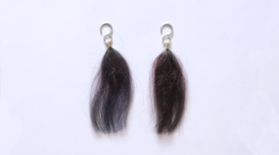
ソジャット ヘナ コーヒーブラウンの染色テスト例。
左が20分染。右が40分染。試材：白の馬毛。湯せんで、約40℃の環境を維持して実験。
※デジタルカメラの特性上、色は正確には再現できていません。
※20分よりも40分のほうが濃く染まる。ということをご確認ください。 |
|

ソジャット ヘナ サフランオレンジの後に、コーヒーブラウンを使って【二度染め】をするときの染色テスト例。
試材：白の馬毛。湯せんで、約40℃の環境を維持して実験。
左から、
１：サフランオレンジ10分 → コーヒーブラウン10分
２：サフランオレンジ10分 → コーヒーブラウン20分
３：サフランオレンジ10分 → コーヒーブラウン40分
４：サフランオレンジ20分 → コーヒーブラウン10分
５：サフランオレンジ20分 → コーヒーブラウン40分
※デジタルカメラの特性上、色は正確には再現できていません。
※５種類の染まり具合は、それぞれ【ソジャット ヘナ コーヒーブラウン】単体での使用に比べてとても色味が深く豊かな風合いになります。
※色の濃さだけを比べた場合、サフランオレンジ10分→コーヒーブラウン40分の組み合わせが最も濃くなっています。 |
|
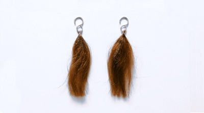
ソジャット ヘナ チョコレートブラウンの染色テスト例。
左が20分染。右が40分染。試材：白の馬毛。湯せんで、約40℃の環境を維持して実験。
※デジタルカメラの特性上、色は正確には再現できていません。
※20分よりも40分のほうが濃く染まる。ということをご確認ください。 |
|
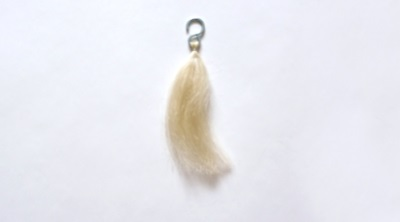
ソジャットヘナ トリートメントクリアの染色テスト例
試材：白の馬毛。湯せんで、約40℃の環境を維持して実験。
全髪が白髪であったり、白髪の多い方が、トリートメントクリアを使ってトリートメントされた場合、白髪に色が残るケースを確認しました。その方の髪質、体温、など諸条件により、着色されるケースがあると判断しましたので、全髪白髪、多くの白髪の方は、色をつけずにケアしたいという場合には、トリートメントクリアは使用しないでください。
なお、部分白髪で多少の色残りは気になさらない方や、黒髪や茶系色の髪の方が、色の雰囲気を変えずにトリートメントしたいという場合には、どうぞ従来通り、お使いください。
※デジタルカメラの特性上、色は正確には再現できていません。
|
|
|
１年中高品質。トラバリー品質を実感してください。
ソジャットはインド北西部の乾燥地帯です。
過酷な猛暑を乗り切ったヘナには、１カ月ほどの間に、わずかばかりの雨が与えられます。この雨が終わると、１日の中でも朝晩の寒暖差が広がっていきます。こうした気候の変化に合わせて、
ヘナの葉っぱの中には有効成分≪ローソン≫がたっぷり含まれていきます。
ここがトラバリー品質 その１
『ソジャット ヘナ』の原料になるヘナは、葉っぱの中に≪ローソン≫がしっかりと蓄えられた11月に収穫します。11月収穫のヘナの中でも、現地でもう一度、含有量の検査をします。トラバリー品質にかなう濃度のヘナだけを選び出します。
一度使えば、良いと評価していただけるのがトラバリー品質の特長ですが、とくに体験していただきやすい違いとしては、『サフランオレンジ』の場合、頭に塗ったヘナを置く時間です。通常の市販のヘナ製品は短くて40分、長くて数時間となっていることが多いようですが、『ソジャット ヘナ／サフランオレンジ』は、20分を基準にしてください。
仕上がりについて、濃いと感じた方は時間を短く、薄いと感じた方は時間を長くすることで、調節できます。
ここがトラバリー品質 その２
≪ローソン≫含有量の高いヘナを選び出したら、ソジャットの南の港町・バローダに運びます。ここに、トラバリー一家が運営するヘナ専用工場があります。ISO認定取得工場で、ダスト混入を極限まで減らしたり、密閉容器で鮮度を落とさずに保管したりといった、きめ細かく様々な工夫を凝らした生産工程で運用しています。
ここがトラバリー品質 その３
その年度に収穫したヘナは、品質が均一化されます。
同一年度内のロットごとに品質の差がないのは、厳しい管理をしているから。
クライアントの皆様には1年中、安心してお使いいただけます。
ここがトラバリー品質 その４
均一で細かい粒子なので、髪の毛のタンパク質への結合が速やかなのです。
|
ここで、ソジャット地方の気候を見てみましょう
気温と降水量のデータをもとに、グラフ化しました。参考に、東京の気温と降水量も記しました。
幸いに、2012〜2015年、2017年、2018年のデータをまとめることができました。年は違ってもおよその傾向は似通っています。
気温の傾向１：最高気温は１年を通じて20度以上になり、１年のうちの8カ月〜９カ月程度は30度以上になる。
気温の傾向２：１日のうちの寒暖差が激しい。また、激しい寒暖差がほぼ１年中続く。
降水量の傾向：ほぼ雨が降らない。夏〜初秋にかけてのみ、まとまった雨が降る。
こうした気候で育てられた結果、たっぷりとミラクルハーブたるゆえんの成分が蓄えられていくのだと観ることができます。
参考資料 ソジャットの気候データ 『accuweather.com』発表資料より
http://www.accuweather.com/en/in/india-weather |
ソジャットの気温 2021年
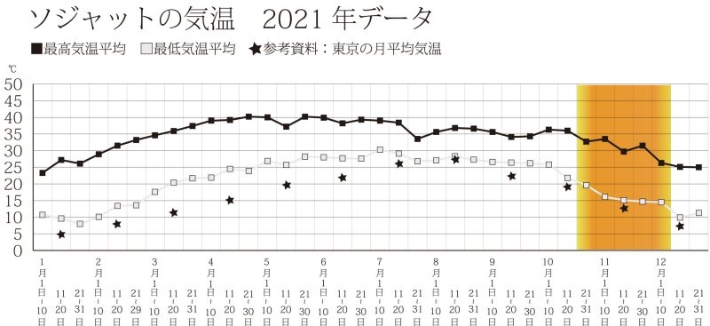 |
ソジャットの気温 2020年
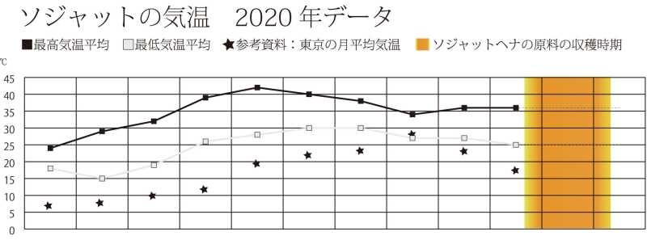 |
ソジャットの気温 2019年
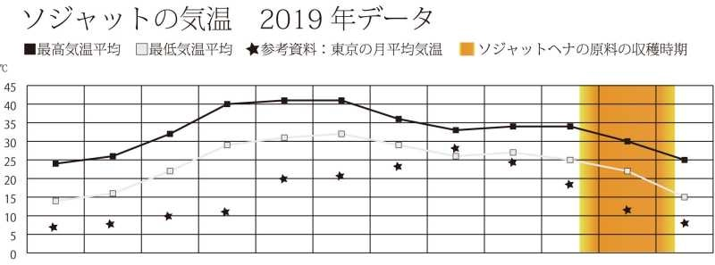 |
ソジャットの気温 2018年
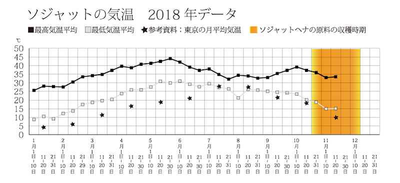 |
ソジャットの気温 2017年
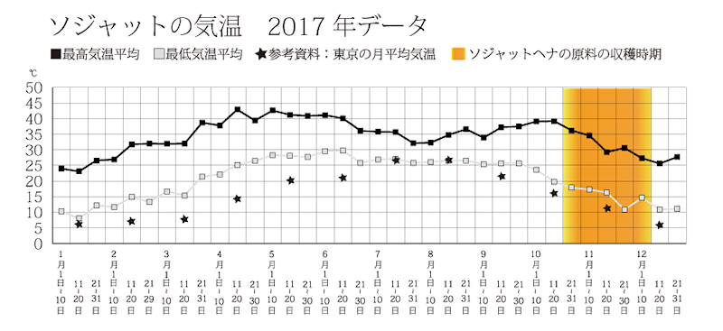 |
ソジャットの気温 2015年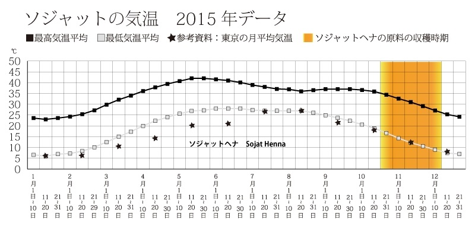 |
ソジャットの気温 2014年
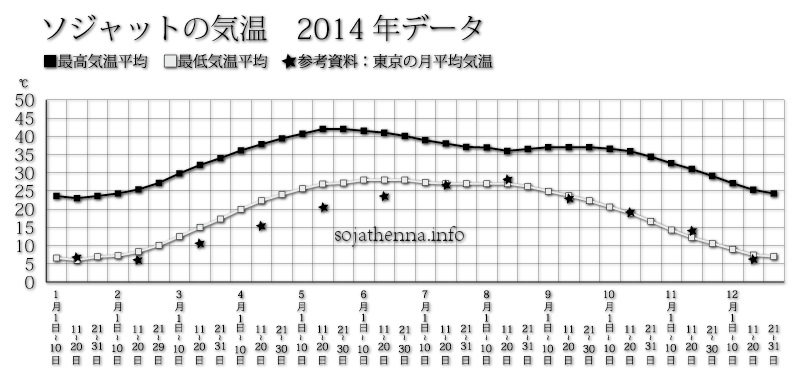 |
ソジャットの気温 2013年
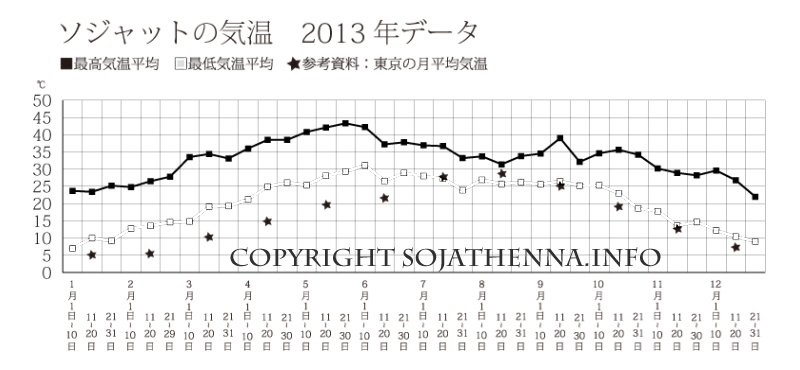 |
ソジャットの気温 2012年
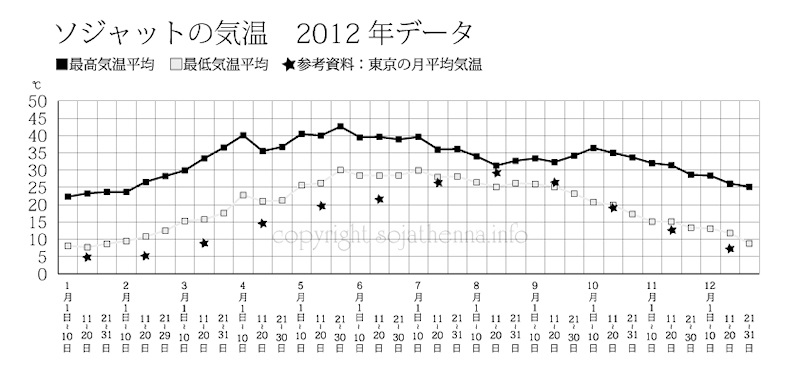 |
ソジャットの降水量 2021年
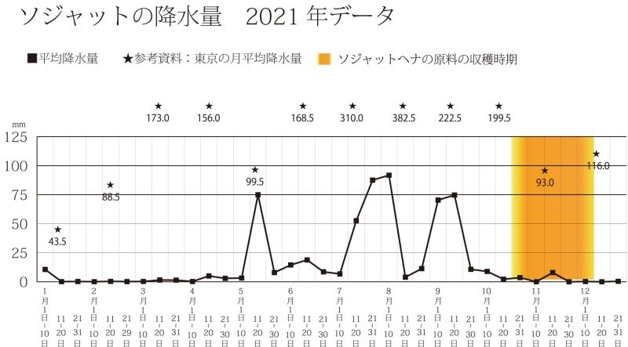 |
ソジャットの降水量 2020年
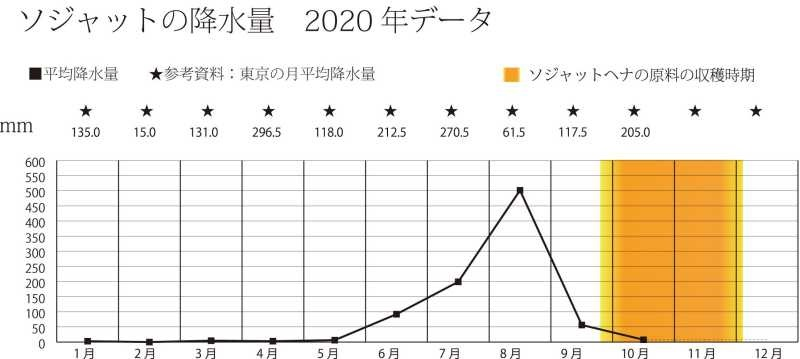 |
ソジャットの降水量 2019年
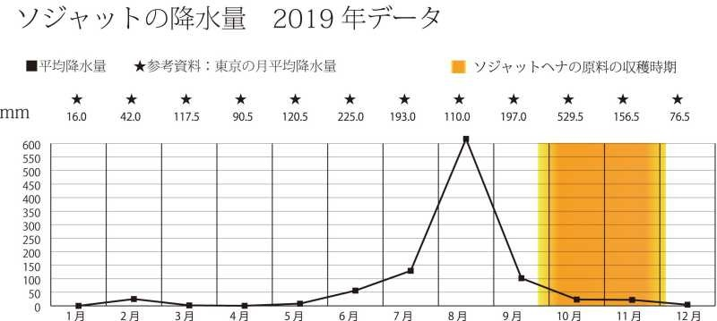 |
ソジャットの降水量 2018年
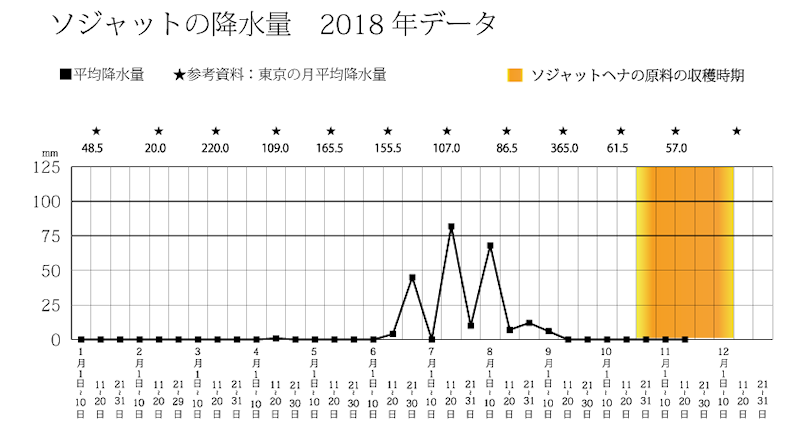 |
ソジャットの降水量 2017年
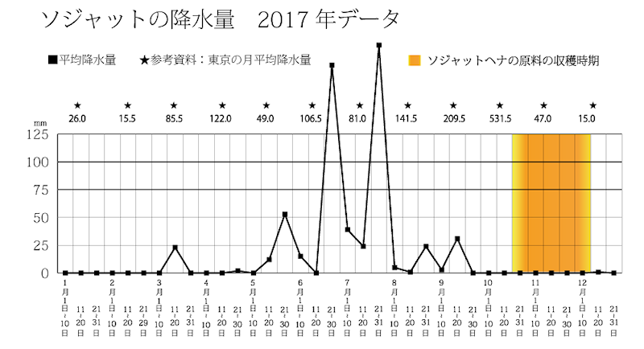 |
ソジャットの降水量 2015年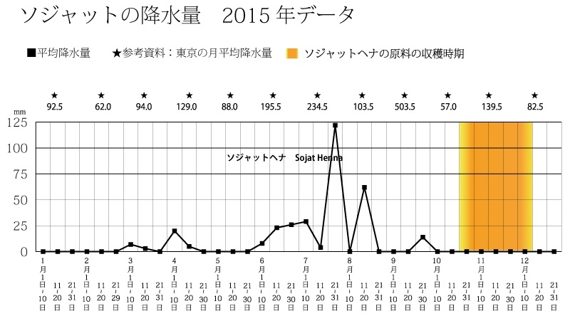 |
ソジャットの降水量 2014年
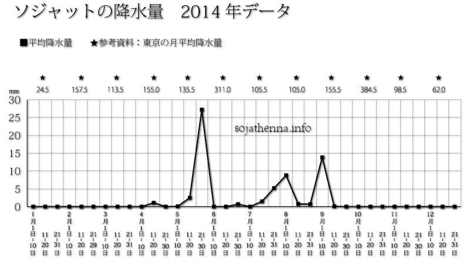 |
ソジャットの降水量 2013年
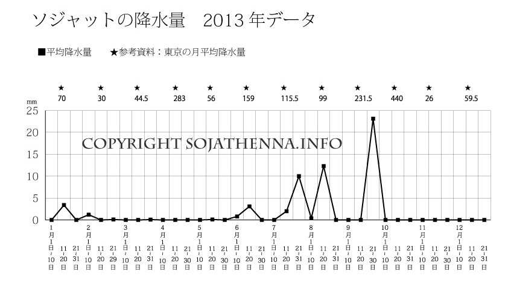 |
ソジャットの降水量 2012年
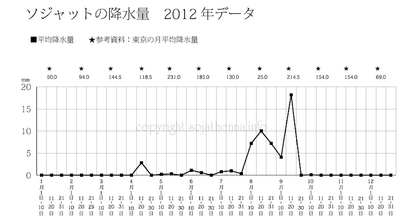 |
|